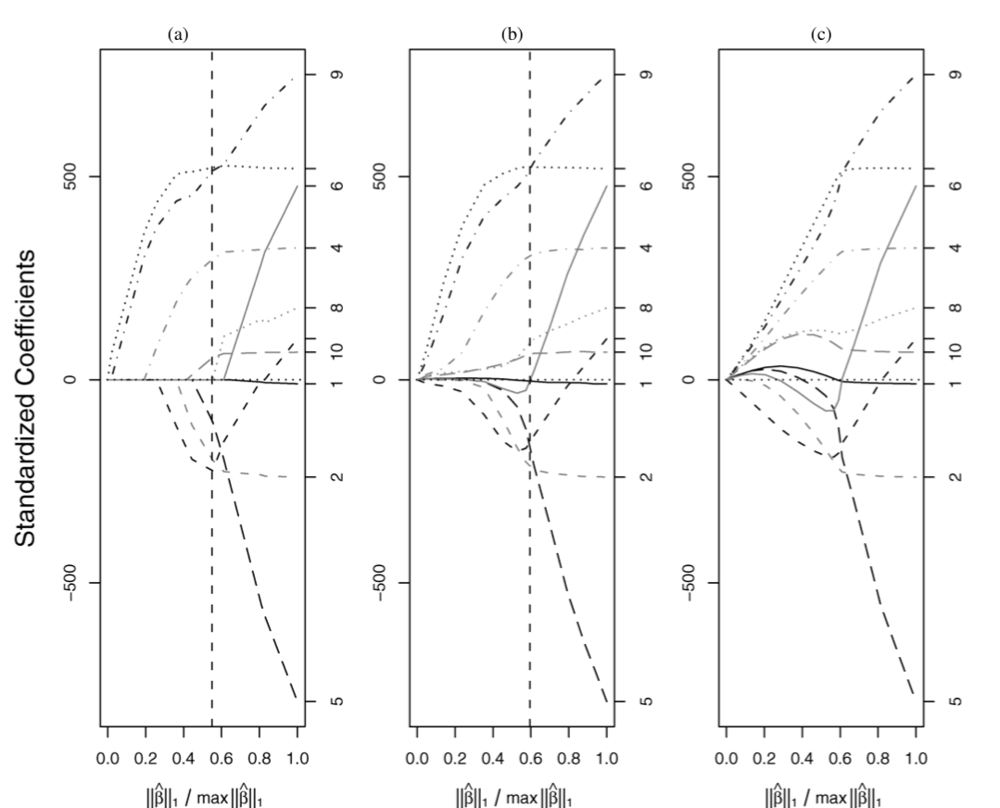

Paper 7 The Bayesian Lasso
7.1 Abstract
Lasso estimate can be intepreted as Bayesian prosterior mode estimate under independent Laplace prior. Gibbs sampling is possible using expanded hierarchy with conjugate normal priors for \(\beta\). The Bayesian Lasso provides interval estimates can guide variable selection.Structure of hierarchical help selecting tuning parameter.
Model:
\[ \mathbf{y}=\mu \mathbf{1}_{n}+\mathbf{X} \boldsymbol{\beta}+\boldsymbol{\epsilon} \]
Lasso LS
\[ \min _{\beta}(\tilde{\mathbf{y}}-\mathbf{X} \boldsymbol{\beta})^{\top}(\tilde{\mathbf{y}}-\mathbf{X} \boldsymbol{\beta})+\lambda \sum_{j=1}^{p}\left|\beta_{j}\right| \] Consider fully Bayesian analysis using a conditional Laplace prior specification with th eform
\[ \pi\left(\boldsymbol{\beta} | \sigma^{2}\right)=\prod_{j=1}^{p} \frac{\lambda}{2 \sqrt{\sigma^{2}}} e^{-\lambda\left|\beta_{j}\right| / \sqrt{\sigma^{2}}} \] scale-invariant marginal prior: \[ \pi\left(\sigma^{2}\right)=1 / \sigma^{2} \] \(\sigma^2\) gurantees a unimodal full posterior.

Bayesian Lasso is not that strictly to 0 as Lasso, but the shape is similar.
7.2 Hierarchical Model and Gibbs Sampler
Laplace distribution as a scale mxiture of normals(with an exponential mixing density):
\[ \frac{a}{2} e^{-a|z|}=\int_{0}^{\infty} \frac{1}{\sqrt{2 \pi s}} e^{-z^{2} /(2 s)} \frac{a^{2}}{2} e^{-a^{2} s / 2} d s, \quad a>0 \]
这个很关键啊，Laplace prior相当于一个权重是exponential的mixture Gaussian prior。
This suggests the following hierarchical representation of the full model:
\[ \begin{array}{c}{\mathbf{y}\left|\mu, \mathbf{X}, \boldsymbol{\beta}, \sigma^{2} \sim \mathrm{N}_{n}\left(\mu \mathbf{1}_{n}+\mathbf{X} \boldsymbol{\beta}, \sigma^{2} \mathbf{I}_{n}\right)\right.} \\ {\boldsymbol{\beta} | \sigma^{2}, \tau_{1}^{2}, \ldots, \tau_{p}^{2} \sim \mathbf{N}_{p}\left(\mathbf{0}_{p}, \sigma^{2} \mathbf{D}_{\tau}\right)} \\ {\mathbf{D}_{\tau}=\operatorname{diag}\left(\tau_{1}^{2}, \ldots, \tau_{p}^{2}\right)} \\ {\sigma^{2}, \tau_{1}^{2}, \ldots, \tau_{p}^{2} \sim \pi\left(\sigma^{2}\right) d \sigma^{2} \prod_{j=1}^{p} \frac{\lambda^{2}}{2} e^{-\lambda^{2} \tau_{j}^{2} / 2} d \tau_{j}^{2}} \\ {\sigma^{2}, \tau_{1}^{2}, \ldots, \tau_{p}^{2}>0}\end{array} \] The parameter \(\mu\) may be given an independent, flat prior. After integrating out \(\tau_1^2,...,\tau^2_p>0\) Improper prior density \(\pi(\sigma^2)=1/\sigma^2\),inverse-gamma prior for \(\sigma^2\) also would maintain conjugacy.
The full conditional distributions of \(\boldsymbol{\beta}, \sigma^{2}, \text { and } \tau_{1}^{2}, \ldots, \tau_{p}^{2}\) are still easy to sample,and they depend on the centered response vector \(\tilde y\). The full conditional for \(\boldsymbol \beta\) is \(MVN(\mathbf{A}^{-1} \mathbf{X}^{\top} \tilde{\mathbf{y}},\sigma^{2} \mathbf{A}^{-1})\) with \(\mathbf{A}=\mathbf{X}^{\top} \mathbf{X}+\mathbf{D}_{\tau}^{-1}\).
The full conditional for \(\sigma^2\) is inverse-gamma with shape parameter \((n-1) / 2+p / 2\) and scale parameter \((\tilde{\mathbf{y}}-\mathbf{X} \boldsymbol{\beta})^{\top}(\tilde{\mathbf{y}}-\mathbf{X} \boldsymbol{\beta} ) / 2+\boldsymbol{\beta}^{\top} \mathbf{D}_{\tau}^{-1} \boldsymbol{\beta} / 2\), and \(\tau_{1}^{2}, \ldots, \tau_{p}^{2}\) are conditionally independent, with \(1 / \tau_{j}^{2}\) conditionally inverse-Gaussian with parameters \[ \mu^{\prime}=\sqrt{\frac{\lambda^{2} \sigma^{2}}{\beta_{j}^{2}}} \quad \text { and } \quad \lambda^{\prime}=\lambda^{2} \] in the parameterization of the inverse-Gaussian density given by \[ f(x)=\sqrt{\frac{\lambda^{\prime}}{2 \pi}} x^{-3 / 2} \exp \left\{-\frac{\lambda^{\prime}\left(x-\mu^{\prime}\right)^{2}}{2\left(\mu^{\prime}\right)^{2} x}\right\}, \quad x>0 \]
7.3 Choosing the Bayesian Lasso parameter
The parameter of the hordinary Lasso can be chosen by cross-validation, which generalized version based on Stein’s unbiased risk estimate. Bayesian Lasso also offers some uniquely Bayesian alternatives: empirical Bayes through marginal maximum likelihood and use of an appropriate hyperprior.
7.3.1 Empirical Bayes by Marginal Maximum Likelihood
\[ \lambda^{(k)}=\sqrt{\frac{2 p}{\sum_{j=1}^{p} E_{\lambda^{(k-1)}}\left[\tau_{j}^{2} | \tilde{\mathbf{y}}\right]}} \] with suggest initial value \[ \lambda^{(0)}=p \sqrt{\hat{\sigma}_{\mathrm{LS}}^{2}} / \sum_{j=1}^{p}\left|\hat{\beta}_{j}^{\mathrm{LS}}\right| \] \(\hat\sigma^2_{LS}\) and \(\hat\beta_j^{LS}\) are estimates from the usual least squares procedure.
7.3.2 Hyperpriors for the Lasso Parameter
An alternative to choosing \(\lambda\) explicitly is to give a diffuse hyperprior. Consider the class of gamma priors on \(\lambda^2\) (not \(\lambda\)). \[ \pi\left(\lambda^{2}\right)=\frac{\delta^{r}}{\Gamma(r)}\left(\lambda^{2}\right)^{r-1} e^{-\delta \lambda^{2}}, \quad \lambda^{2}>0(r>0, \delta>0) \] Because the resulting conjugacy allows easy extension of the Gibbs sampler. The improper scale-invariant prior \(\frac{1}{\lambda^2}\) for \(\lambda^2,(r=0,\delta=0)\) is tempting but leads to an improper posterior.
When use this prior, the full conditional distribution of \(\lambda^2\) is gamma with shape parameter \(p+r\) and rate parameter \(\sum_{j=1}^{p} \tau_{j}^{2} / 2+\delta\).
The prior of \(\lambda^2\) should approach 0 sufficient fast as \(\lambda^2\rightarrow \infty\) but should relatively flat and place high probability near the maximum likelihood estimate.
7.4 Extensions
7.4.1 Bridge Regression
\[ \min _{\beta}(\tilde{\mathbf{y}}-\mathbf{X} \boldsymbol{\beta})^{\top}(\tilde{\mathbf{y}}-\mathbf{X} \boldsymbol{\beta})+\lambda \sum_{j=1}^{p}\left|\beta_{j}\right|^{q} \]
The Bayesian analog of this penalization involves using a prior on \(\boldsymbol \beta\) of the form
\[ \pi(\boldsymbol{\beta}) \propto \prod_{j=1}^{p} e^{-\lambda\left|\beta_{j}\right|^{q}} \]
keeping in the laplace prior form, the prior woule instead use \[ \pi\left(\boldsymbol{\beta} | \sigma^{2}\right) \propto \prod_{j=1}^{p} e^{-\lambda\left(\left|\beta_{j}\right| / \sqrt{\sigma^{2}}\right)^{q}} \] This is the elements of \(\boldsymbol \beta\) have (conditionally) independent priors from the exponential power distribution.
这一块没懂
\[ e^{-|z|^{q}} \propto \int_{0}^{\infty} \frac{1}{\sqrt{2 \pi s}} e^{-z^{2} /(2 s)} \frac{1}{s^{3 / 2}} g_{q / 2}\left(\frac{1}{2 s}\right) d s \]
7.4.2 The“Huberized Lasso”
Rosset and Zhu(2004) illustrated that the Lasso may be made more robust by using loss functions that are less severe than the quadratic, which is \[ \min _{\boldsymbol{\beta}} \sum_{i=1}^{n} L\left(\tilde{y}_{i}-\mathbf{x}_{i}^{\top} \boldsymbol{\beta}\right)+\lambda \sum_{j=1}^{p}\left|\beta_{j}\right| \]
Hyperbolic loss:
\[ L(d)=\sqrt{\eta\left(\eta+d^{2} / \rho^{2}\right)} \]
The key idea for robustification is to replace the usual linear regression model with
\[ \mathbf{y} | \mu, \mathbf{X}, \boldsymbol{\beta}, \sigma_{1}^{2}, \ldots, \sigma_{n}^{2} \sim \mathrm{N}_{n}\left(\mu \mathbf{1}_{n}+\mathbf{X} \boldsymbol{\beta}, \mathbf{D}_{\sigma}\right) \]
To mimic the hyperbolic loss, an appropriate prior for \((\sigma_1^2,...,\sigma^2_n)\) is \[ \prod_{i=1}^{n} \frac{1}{2 K_{1}(\eta) \rho^{2}} \exp \left(-\frac{\eta}{2}\left(\frac{\sigma_{i}^{2}}{\rho^{2}}+\frac{\rho^{2}}{\sigma_{i}^{2}}\right)\right) \]
妈蛋没看懂这篇，要重新推一下第二节 先跳去看看biometrika那篇看看什么情况
好多周以后我发现这篇果然很经典很短很简练但是很nb好吧
appendix里面也有好多有意思的玩意：比如这段
The Monte Carlo EM method for empirical Bayes estimation of hy- perparameters proposed by Casella (2001) essentially treats the para- meters as “missing data” and then uses the EM algorithm to iteratively approximate the hyperparameters, substituting Monte Carlo estimates for any expected values that cannot be computed explicitly.